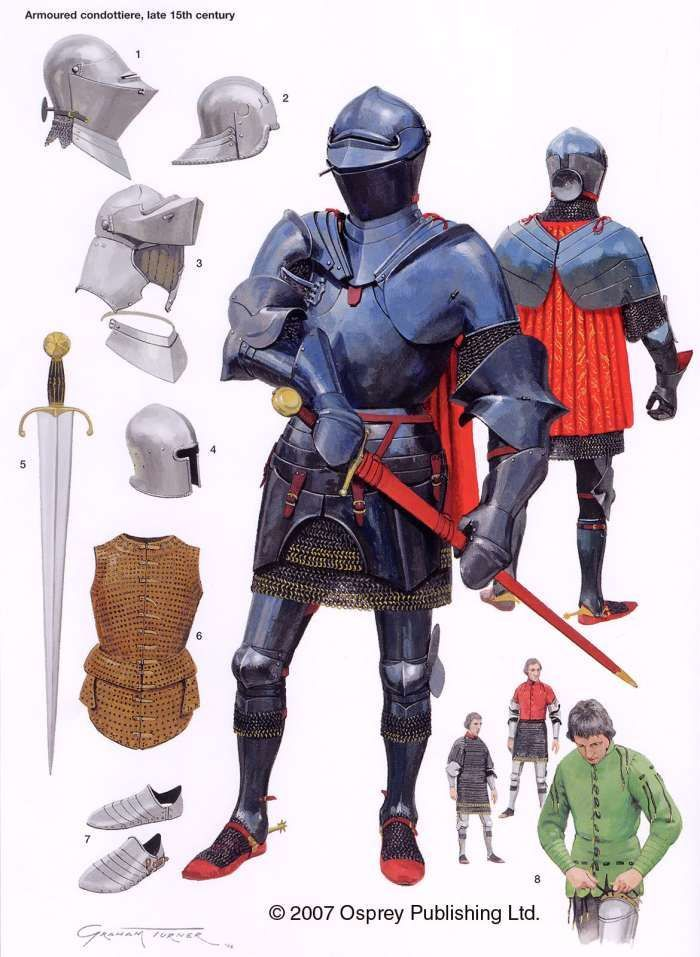

前言
前情提要：
后续追踪报道：


相关发言
北京青年报：为网络文学喝彩时别忘了“资本”这头怪兽
最后一句话才是要点。如果这文章就是为了“扬长避短”吹风，尤其是为了那些以网络文学鬼才自诩号称“抖机灵天下无敌只是把握不住中长篇”于是在网文界混不下去只能“走实体路线”的钦定文豪打广告，那么就当放屁可也。
就说“凝练”，咱也给出示例范文了吖，就是极简主义“范版西幻设定集”，感觉不能再凝练了，不加注释看不下去了，若要连载肯定需要注释窜入正文。凡是有志于“凝练”的血手，无论是不是惦记着“走实体路线”，都可以参考。欢迎探讨。
这篇文章的价值看来范队也是认可的，我也觉得有志于文化输出，有志于赶上网文国际化浪潮的写手，能够从这篇文章中有所得。
最后几段关于读者阅读期待的论述还是非常精准的，不仅仅是凝练的问题。
因为网文已经到拐点了。早期“网文”（当时还是对岸租书店的实体出版物）有个里程碑一般的大作“我是大法师”，直接导致一批写手与小白文划清界限，“小白”这个词就是那时候形成的。后来在加进多种传统文学元素之后，有了十几年发展。到了最近，从传统文学引入的活力又被消耗光了，又变成高级小白文了。
我没说反，是网文借鉴了传统文学的优点才发展起来的，才“有IP价值”，而网文本身的优点，一个是涉及传统文学所不会涉及的领域，如游戏，另外一个就是打破审查权力寻租垄断，提供了宪法规定的出版自由。后者才是网文的重要性，是其它所有优点加起来也无法比拟的。
如果说到细节，大约到了前年，工作室已经泛滥，大纲千篇一律连小白读者都看出来了。那时候的网文，确实注水严重，情节重复单调，篇幅靠不停开副本维持，其实在结构上算不上长篇。如果参考传统文学，在龙空还讨论过“大场面”，那么估计写手普遍把握不住哪怕是普通的长篇。
当时我建议，如果是单主角开副本，可以参考英雄无敌三历代记，八个副本主线连贯没有神转折。然后提到了自己的构思，也就是另外一条多主角思路，从不同视角描述同一段情节，主角之间可能有交集也可能没有。当然，我的建议吃力不讨好，被实体钦定文豪和网文工作室两边喷，眼看就要面临“多方围堵两面夹攻”钦定“死路一条”了也。
所以嘛，今年初决定亲自动手示范，于是“设定集”就这么出来了。相信看过的朋友应该能感觉到，不注水不凑字数（我码字的时候简直是拼命删字数），也可以写得很长很长，还不单调。
确实是一个拐点了，可以很明显的发现就是题材再也没有新突破而只是把过去的东西来回混合拿出来骗钱了
喝多了回来了，简单写几句睡了。就看如今各个“娱乐大亨”纷纷炒冷饭也知道，边际效应明显，不卖情怀玩不下去了。不仅仅是硬件，说过了因为游戏需求放缓，显卡销量下滑，才有大肆炒作人工智能和比特币的情况。软件也一样，常见套路都玩过了，换汤不换药的下场就和当年Atari一样，同款游戏换换资源包就上市，把用户当傻哔一样忽悠，结果就是完蛋。
补充一句吧，2010年初龙空服务器被海洋出版社扣压的那段时间，很多龙空用户四散避难，最终第三纪开始，有纷纷回归。当时我说如果我做论坛，就是个以XML为后端，以XSLT为前端，要能解析音乐（MusicML）和数学（MathML）尽可能提供更丰富内容的站点。当年吱呼开站，看实现大致上也是这样的构架。
再补充一句，当时我就（在群里）提到了“如果再码字的话”（那时候工作很忙）会写什么的话题，准备从正反两方面码字的构思2007年就有了（“罗公案”俩坑）。那时候有人问，如果为了迎合小白读者必须写爽文，你怎么办，是坚持立场而仆街还是跪在真实？我的回答很简单，作为“前传”或“缩写本”或“钦定党史”，用敏豪生当主角，吹牛大王龙傲天讲故事可也，就用“我是如何穿越时空并拯救世界的”这种标题作为每章名称。
至于“真实的历史”，当然可以慢慢展开哟。也在群里提到过，类似张飞打哑谜的构思，后世历史学家通过蛛丝马迹重构的真相，与当年的真实情况完全风马牛不相及。这样对比反差甚大，更能表达作者的立场和观点。
确实是一个拐点了，可以很明显的发现就是题材再也没有新突破而只是把过去的东西来回混合拿出来骗钱了
加一句，回忆一下当时的场景是这样的。我说要再码字就倒着写，通过后世历史学家的“疑古”倒叙与当年真实情况的正叙互相交织，第一章标题是“北邙秋风吹野蒿，古冢渐平新冢高”，看上去就是个“大场面”。然后群里有个“oLion”（好像是这个名字）的家伙嘲笑我。
再然后我就暗地里咬牙切齿了，决定把场面弄得更大一些。影射钦定党史的吹牛大王龙傲天版前传，用敏豪生当主角，写成开挂升级爽文；用后世历史学家视角的后传，写成疑古派反乌托邦虐文；而真相，就是“范版西幻设定集”体现的这种形式。那时候觉悟和警惕性还不够高，写出来也不够损不够恶毒，拖到现在再动笔其实是好事。
挺有趣的，每看范队说和作品相关的事情都很带感
十几年前的龙空的氛围就这样，那时候“网文界”的圈子并不大，包括读者在内。后来虽然论坛上用户越来越多，但是各个群里还是那些老家伙。当时的共识是，网络文学也是文学，网络不过是载体罢了。通常语境当中的“传统文学”，排除了“畅销书”这个领域，而网文几乎全部都是瞄准畅销书方向。
其实只要换个字眼“畅销书”，对于网文的定位就准确了。哪怕“走实体路线”，畅销的“畅销书”仍然具有很高的文学价值，有些精致之处不在“传统文学”之下。但是要注意，对于一开始就瞄准商业化目标的畅销书，同样存在着目前网文存在的所有问题。
举个例子，好莱坞电影“大片”和“美剧”都有通用剧本，有些嘴损的评论员直接套用评论模板，指出某个情节在大纲第几页上。至于剧本模板，网上一搜就有，比如“好莱坞电影剧本--的经典格式”，还有的被删了，比如“好莱坞电影剧本套路总结”。套用到网文，应该用电视剧模板，比如“美剧标准剧本大纲模板与不正确节拍例子”。
所以，如今你看到的那些“走实体路线”的钦定文豪哗哗拍影视剧眼红，是因为你不知道“钦定”俩字的含义。同样的内容，受过专业培训的编辑甚至就是影视编剧，会直接提醒甚至指导钦定文豪按照套路瞎编，与人方便与己方便，整条“IP流水线”你好我好大家好。而普通写手绞尽脑汁的构思只有被“借鉴”的待遇，哪怕引入了“传统文学”再多精华因素，也不会“畅销”，当然不会“成神”喽。
范队，我们写文的时候可以用你的点子吗？
可以，我公开声明普通写手随便用，但是钦定文豪除外。这也有先例，比如“Hello Kitty”的授权声明就这样，只要不损害形象，没有负面影响，欢迎使用。我的“点子”当中，很多都是已经处于公共领域的人类文明共同精神财富，包括但不限于“大纲”和“套路”。再举个先例，有些极端的文学理论家认为，所有喜剧的桥段都在阿里斯托芬的作品中出现过，而有些极端的哲学家认为，西方哲学就是对柏拉图的注释。
而细节的设定，有些有商业版权，我自己码字的时候刻意避开了这些。比方说前一阵看到蓝冰夜光科普，说DnD的版权明确列出来哪些来自公共领域，如欧洲神话和民间故事的部分，有些则是TSR/威世智原创，如“灵能”。而那些专有名词更是如此，比方说写武技，直接用“独孤九剑”流派名称，肯定是侵权，想用的话只能把其中来自“东方传统”的公共领域的部分抽出来，这些就不是威世智独占。
具体到我的设定当中，有些也是参考了网文既存的“点子”再加以发挥。比方说“魔兽”脑壳里面的充斥魔力的“魔核”，在很多网文当中都出现过，不知道什么时候开始的。这个设定算是公共领域吧，毕竟麝香牛黄狗宝之类东西现实存在，宰了动物挖器官是人类共同的行为方式。但是为了避免侵权（是不是我太小心了），我还特意直接从笛卡尔猜测松果体功能出发，赋予了“魔核”以形而上学意义。
再比方说我设定武僧可以攒“怒”并外放“怒气”，一方面是DnD里面设定的来自“东方传统”（包括但不限于武侠小说）的部分并没有版权，另外一方面则是因为格斗游戏当中普遍设定“怒满”状态会发大招但飞行道具则与怒值无关，于是也没有侵权。咱的设定是自己脑力劳动的独创结果，于是这就不能说咱“抄袭”喽。不要高估钦定文豪的下限，再怎么谨慎也不为过。
总之先说这么多吧，如果你感兴趣，还可以详细解释一下我设定的构思过程，希望可以对广大写手（除钦定文豪外）们有些帮助。
洗完澡了精神多了，继续。因为每个人知识结构不同，经济状况也不同，所以对于绝大多数写手来说，指望厚积薄发之后再动笔以藏诸名山大川的经典为目标码字不太现实。因此，合理的方式就是看米下锅，有多少积累写多少内容，在码字中进步。正如婴儿消化道没发育完全吃不了大鱼大肉但总可以喝奶喝粥一样。
但这不是说开脑洞可以不动脑筋，也是有一些技巧的。首先是举一反三，比方说“龙语”，很多作品中都出现过，特点就是对于人类来说非常难学，很多写手也花了大量篇幅描述，不仅仅是词法语法，连发音都很困难。那么，立刻要想到，发音困难是因为发音器官不一样对吧，然后就要参考现实动物想到很多音人类根本发不出来，再然后就要想到人类如何发挥仿生学技巧模仿。
这个构思上个世纪末我就有了，科幻世界2000年3月号封面故事《接触》就是我写的，文中设定一个“外星人”感冒了某发音器官不能用于是临时抓了一把大提琴凑数。所以，这个构思如今扩展一下，就是设定集第一篇“只有龙才会说龙语”的中心思想，设定“龙语”的效果是管风琴（或巴扬）协奏曲那种，比人类复杂得多的发音器官只能靠乐队模拟。
再然后，“外星人”换成“外星龙”，则是被一堆地摊文学和正经的UFO报告如罗斯威尔事件之类启发的。而“外星龙”尸体被各个势力瓜分研究，则是被民间故事“瞎子摸象”启发的。再往后的推演就顺理成章了，人类只获得了来自“高等生物”肉体的技术，并没有获得任何龙类文明的成果，这也与西幻通用设定中龙族靠基因获得强大肉体能力于是不思进取兼容，尤其是解释了为啥只有“龙语”而没有“龙文”，龙类没有典籍，没有文艺，没有历史，只有趴在金银财宝上面睡觉的本能。
第一篇设定的构思过程大概就是这样。
继续。第二篇设定“通背拳法与居合斩”的构思出发点是“圆谎”，也就是很多虚拟世界当中不可思议的设定，不能简单用作者最大糊弄过去，要提出一些合理的假设使得其自圆其说。而哪怕在龙空，看见一帮灌水机用武侠小说评书演义尤其是查博导系列到处放风，已经看恶心了，所以第二篇决定写“武术”。
因为暴力是人类乃至各种食肉动物共同的天性，所以不能妄自尊大的认为我中华上国传统武术天下无敌，地球上其它民族和种族也有自己的肉体锻炼方式，尤其是在大规模战争中，优胜劣汰的时间越长，保留下来的“传统武术”越有效。欧洲的武术已经有人科普过了，在那之前我就知道相关部分内容，所以用“德国剑圣约翰内斯·利希特瑙尔”作为角色“汉斯·因斯布鲁克”的形象原型。
选了通背拳法，是因为中国传统中对通背猿这种动物的描述太奇幻，啥俩胳膊相通此长彼短，已经被近现代生物学否定了。而以通背猿为原型而创造的传统武术通背拳法，应用对象是俩胳膊不能互通的人类，那么这武术有效果么？很多人嘲讽实战中通背拳法就是王八拳，瞎抡乱抡就行。所以嘛，在西幻设定中圆谎的方式，就是唯物主义的骨骼肌肉虽然不能互通，但是唯心主义的力量可以互相借调。
选了居合斩，是因为日本动漫游戏对这种传统武术的描述太美型，不是指拔刀的速度，而是指收刀的速度。设定中居合斩的原型，是格斗游戏罪恶装备的角色Johnny，网上有视频。那种技巧在现实中无法做到，而在虚拟世界中这种耍酷装哔的方式，甚至可以推动情节。而没有实战意义的技巧会被淘汰，因此收刀速度必须圆谎，最简单的方式就是赋予刀鞘以额外的必需功能。
正好西幻设定中，除了物理攻击之外还有魔法攻击，并且普遍设定武器可以有魔法效果。然后又到了举一反三的时候了，魔法不止一种，没有一招鲜吃遍天的应对方式，所以武器的魔法效果至少有一部分不是固定的，必须在实战中随机应变。因此，刀鞘的作用设定为附魔，而收刀迅速被设定为尽可能快的除魔附魔以应对下一次攻击。
第二篇设定的构思过程大概就是这样。
继续。第三篇设定“教内无派千奇百怪”看标题似乎是影射政治和意识形态领域，但是因为整套设定集以平行世界的欧洲为模板，大部分背景都是已知的。因此除了面向不熟悉西方的读者展开背景之外，还必须写点其它内容，否则就有注水废话刷字数嫌疑，一定会有灌水机跳出来喷我，顺便吹捧钦定文豪。
所以，其实第三篇设定的中心思想是一个存在超自然力量的平行世界的经济活动。本位面情况各位都知道了，啥农业手工业商业什么的，只要查资料就能获得，那些不需要啰嗦。而“魔法资源”在西幻设定当中的地位，恐怕比通常资源更为重要。为了使得设定可以自圆其说，不能偷懒照搬各种游戏当中由服务器分配的明显不符合经济规律的数据，必须使“魔法资源”相关运作无缝嵌入到本位面历史上那种经济活动中。
首先是（魔法）能源。有些西幻设定中为了照顾火系魔法的应用，设定不存在化石燃料煤和石油，但是应该有木柴。这种设定的前提就是自打人类“诞生”以来就天然的会使用魔法，不存在一个逐步摸索从而认识世界并改造世界的过程，因此相应作品的背景对于文明和历史语焉不详无法说服读者。所以，与其砍掉“低效”能源，不如提供“高效”能源，用的也是网文共识：提供魔力的矿物魔晶以及生物魔核。
其次是储存（魔法）能量的方式，设定一次性魔晶和反复充能的魔核存在区别。因为西幻背景中“魔法能量”不止一种，并且也没有互相转化的规律，所以设定会复杂并且有趣得多。后面的讨论中也提到了，“电力”可以用正能量与气元素的“相互作用”来模拟，其它组合方式以此类推，所以在一定程度上解决了与本位面不兼容的情况。
再次就是运用（魔法）能量的方式，提到了魔核因为有生命气息所以可以反复充能，其实就是暗示了魔法只有“生物”才可能使用，生物的“智慧”越高等，运用的方式越复杂精致。这设定对应了“人类会使用工具”这个本位面关于智慧生物的共识，并有所扩大。而生物除了动物之外还有植物，所以（在注释当中）提到了“琥珀”这种植物产品，用本位面真实存在的“琥珀之路”对应“一带一路”只是顺带的副作用（或曰“抖机灵”）。
然后就是各种魔法装备，利用魔法材料制作装备，并且魔法装备总是极为精致需要高超工艺，这也是网文当中的共识。那么本位面当中的珠宝行业，可以在平行世界当中承担这个责任，安特卫普是钻石乃至珠宝产业的中心，就扩展成各种宝石、魔法材料、工匠以及制造加工魔法装备的“高新技术园区”。
最后才是商业和金融。在前面设定好（魔法相关）经济活动之后，可以直观的理解与本位面大致重合的商路的存在必要性，用不着花费篇幅解释了。所以，正好可以利用本位面存在的汉萨同盟等商业组织，以及与实物货币同时流通的赎罪券（有扩展），以及还没来得及提到的股票、债券、期货交易所。后面与海运相关的设定中，“波罗的海干散货指数”（BDI）也可以按照原意照搬。
第三篇设定的构思过程大概就是这样。
范注：
这里谈笑风生先从大道理说起，然后具体举例，最后详细叙述构思过程与每篇设定的中心思想及主要内容进行「示范」，相关内容已经在《设定集草稿长编》当中收录了。
讨论英雄无敌等网游背景类小说的毒点
英雄无敌是建立在魔法门系列世界观上的, 魔法门系列本身就前后矛盾. 3DO歇菜之后英雄无敌屡次倒手 现在是个什么世界观那可真是鬼知道.
从五代开始就是“龙神”世界观，网文当中的体现，就是《琥珀之剑》。四代是真正的“Might and Magic”，有个没有Magic的Might阵营，在网文中的体现，可能是《魔法高材生》那种将Might与Magic对立并且虽然承认都不是好东西但是显著倾向于Magic的立场。
五代就是倒手之后扯出来的新世界观了, 5代做的还不错 3D主城看着帅.
而六代是前传，换了个开发商，换回2D，剧本更出色，但八阿哥更多。我买了盒装版，玩了个开头就放下了，因为联线升级总是失败，到后来已经启动不了了，再往后就没跟。
简单写几句打盹去。英雄无敌是回合制战棋，比万智牌那种回合制对战强点但有限，这类背景的网文如果没有世界观，那么写出来还不如攻略。就是说，官方剧情是随着玩家升级而逐步提高关卡难度，并且因为反复测试可玩性而保持了一条平稳的进步曲线。离开这条主线，恐怕很难构思出同样平稳的情节。
注意世界观不是指故事背景，那也是官方为了照顾游戏性而设计出来的，未必符合网文需求。对于英雄无敌来说，除了城之外再没有其它建筑有成长性了，这种情况下若是安排主角从城外伐木场之类地点开始，不开脑洞就写不出来什么东西，开了脑洞就与原作冲突。
顺便，万智牌若干套环境当中，我的印象里只有拉尼卡环境及其扩展“十公会”比较容易塞私货。毕竟官方就已经设计出十个阵营，各自有各自的理念，想必还经过反复测试保证平衡。就是说，随便选一个公会，除了闷头发展之外，对外立刻有九种选择，还都有联合与对抗两种态度，按照组合的乘法原理，指数增长的情节空间很可观吖。
范注：
此处谈笑风生没有展开，因为主题就是在强调「网游」而不是「小说」，于是参与者对现实不感兴趣。所以仅仅提到「游戏设计考虑平衡性是为了娱乐，现实当中没有这些东西」老生常谈，并且从「（魔幻现实主义）文学」角度提供了一些意见和建议。
但是如今看来，炒作《安德的游戏》还动辄「笑得肋骨疼」的后现代赛博朋克高第良将，似乎真的把乌克兰当成「游戏棋盘格」看待了。只不过本方主角必须「开挂」，或者用码字巨侠的原话讲「军人不是武士，战场不是道场，胜利者不受谴责，历史由胜利者书写」并有帮闲碎催捧场「武德充沛侠义无双一力降十会咋地吧」「有核弹不用留着下崽么」。
卧槽邪恶小说不能看。
大救星教导你们说，“若是办一份报纸专门报道阴暗面，顶多半年就垮台”。所以，可以办一个网站专门发网文吖，顶多半年民国就垮台，多么的政治正确吖。
比方说，地主换成领主，乡贤换成骑士，贼秃牛鼻子气功大师换成神棍，南京换成梵蒂冈，上海换成罗马，莆田换成马耳他，中医药产业链换成医院骑士团，国民党换成教会，致公党换成黑手党，青帮换成克莫拉，电信诈骗团伙换成盗贼工会， 渣滓洞换成宗教裁判所……
然后常凯申要“攘外必先安内”“抵抗土耳其顶多三天就亡国”，宋子文滥发赎罪券，孔祥熙倒卖假圣物，陈立夫扶持钦定吟游鬼才，陈果夫收买吟游诗人到处散布小道消息……当然，马伯庸还是个自称“德意志太祖高皇帝兼匈牙利摄政”并且叫嚣“讨厌的人都要死”的逗哔精神病自大狂。
这么写一点政治风险都没有，还能符合主旋律传播正能量，弘扬中华传统文化，宣传社会主义核心价值观吖。
这是什么书
如果还没有，过几年咱写一本，以身作则示范一下怎么当钦定文豪。一帮聚贤庄法西斯灌水机三天两头叫嚣啥吃不到葡萄说葡萄酸，等咱认真开始设定了，它们丫又不高兴了，真是叶公好龙。
没渠道怎么钦定？
只是示范“怎么当”而已，不是去抢逗哔精神病自大狂的饭碗，不需要渠道。
加一句，看版上推书，原名《骑士向北法师向南》，被编辑改成《魔法高材生》这逗哔名字了，这就是“渠道”的作用。
所以我说，除了钦定文豪之外，其它写手都是抹布，“渠道”决定了它们注定当钦定逗哔反角。
前些天预言过了哟：http://lkong.cn/thread/1688927/2.p_48359325
刚才忽然想到，为了政治正确/不正确，是否会有红客/黑客远程入侵服务器修改后台数据库，把我这【范版西幻设定集】改名为【建设有中国特色社会主义西幻世界】？
第一篇，【只有龙才会说龙语】改为【实事求是】
第二篇，【通背拳法与居合斩】改为【开拓进取】
第某篇，【谁的太阳？双城侠隐记】改为【砥砺前行】
……
如果“作者已经决定了”，钦定文豪挂名借鉴，没准真会改成这样吧。
楼上SB出没，大家注意避退
你是“三生文贼十里连抄”请来的灌水机么？
你被害妄想症还是越来越严重了
上次还说我是走兽派叫来打击你的，这次怎么就变成什么三生文贼了？
那个在吱呼一身分饰244个角色的职业灌水机不是你么？
你这次污水泼得也忑智障了吧
我一个从来不混知乎的人你说我是什么知乎灌水机，哈哈哈哈……不行了，笑死我了
除了吱呼、龙空之外，你还在哪里灌水呢？
怎么认出来的？
一个常识，一般社交软件好友数量上限是150，这是心理学和社会学的结论，再多就记不住它们之间的人际关系了。所以能一身分饰244个角色的灌水机，不是一个人而是一个组织。不要看帐号认人，要看其措辞代表的屁股或鸡巴。
我连龙空都不怎么发言的人，去灌水？
你以为谁都跟你一样闲着无聊，每天就在网上传播邪教啊有那个时间，我都能多读几本书、多看几部电影了
那么再加上书评家、影评家之后，就是246个角色了吧？
范注：
这里应该是同时期「来来来，请注意学习观摩」系列重要讲话精神当中的一处，明显使用「示范」字眼。当时正流行「你是猴子请来的逗哔么？」梗，热点应该是唐七抄袭公案的苦主在版上贴调色板维权。而正在知乎一身分饰244个角色的帐号，应该是「海贼/王路飞」这种断句方式。
萌新求教，为什么欧洲文艺复兴时期富有魅力？
文艺复兴时期是很复杂的，一方面欧洲和奥斯曼打的很惨烈，另一方面欧洲内部也打的很惨烈，第三方面欧洲人狂虐印第安人也很惨烈。
至于那些躲在后方写黄书的文人，他们可代表不了文艺复兴。
符合龙空定位，只谈“躲在后方写黄书的文人”，它们的作用，是响应民意瓦解反动教会的意识形态基础。如果民间没有需求，也不会有那么多黄书写手出现。可以对比“明清艳情禁书”系列，明清时期写黄书的文人也不少，可是中国就没有文艺复兴。
至于反动教会的意识形态基础为啥需要瓦解，如果不熟悉欧洲历史，可以用中国的宗教对比。公开出版物提到了民国时期的少林寺，拥有大量耕田（教会地产），而佃户只能“有闺女的种水浇地，有好媳妇的种好地，有孬媳妇的种孬地”。
哪怕从文本分析黄书，参考三言二拍之类话本型短篇小说集，开头先来几句说教“万恶淫为首”，然后口沫横飞讲黄段子，最后来个“报应”，为了通过反动教会出版审查而已，听众都不把开头结尾当回事，说书人也一样。
而分析“黄书写手”更简单，看它们背后的赞助商就可以了也，夹私货到底是有利于反动教会还是有利于广大人民群众。应景的谈最近看的几本西幻网文（告一段落之后单发主题），吹捧“血脉”的，吹捧“守序邪恶”的，吹捧“为达目的不择手段”的，目光越过这些工作室，都能看到豪门贵种把持的反动教会的身影。
就是说，文艺复兴这种事，欧洲已经摸着石头过河了，中国想要照搬，那也是在“党中央”的领导之下，一堆“钦定文豪”把之前那许多网文写手的创意构思至少是脑洞，都整理成符合反动教会换皮需要的形式，不知不觉的灌输给小白读者，让广大人民群众“认命”。
如果各位不知道“钦定文豪”是什么操行，可以参考逗哔精神病自大狂马伯庸，自称“后清国太祖高皇帝”还叫嚣“讨厌的人都要死”，但就是能在亲爹国贼郭声琨的撑腰之下，随便玩美女，玩腻歪了就卖给共军当慰安妇。
而共军头目哪怕是豪门贵种大少爷都不在乎，因为欠了一屁股债，就把老婆/儿媳妇送给马伯庸凌辱调教为肉便器还在窗外吹箫助兴，然后卖掉当慰安妇，还要修改公安部档案和民政部婚姻登记记录，把这黑郭脏水绿帽子都扣到别人头上。
喝多了回来了，简单写几句睡了。就上面的回复稍微展开一点，可能展开多了就懒得综合起来发主题了。就说“黄书”，就说最近看的几部网文，发散思维也可以弄出一些套路来。
比方说《巫师世界》提到了“梦魇世界”，《巫界术士》提到了“梦境世界”，《琥珀之剑》开头至少有个黄金之树能把人拖入梦境。共同点是肉体精神都会同步，但是这几部都不是以“黄书”为卖点，一带而过。
如果评论家用“黄书”标准联想，梦魇是噩梦，那么至少要考虑到“春梦”的情况吖，尤其是目标读者都是小白中二青春期激素过剩的逗哔的情况下。一定会有这方面的展开。
随便举个例子，比方说主角走了狗屎运获得啥传承，“范中出の梦魇替身术”（暂名），为了照顾小白读者，弄个都市或青春校园题材，怎么让小白中二追捧呢？
先设定法术本身：
- 一个施法者俩受法者进入同一个梦境。
- 施法者肉体精神都会受到影响，受法者A肉体受影响，受法者B精神受影响。
- 前提条件是仨人必须同时睡着。
- 还可以进一步严格前提，比如受法者B必须与施法者互相了解身份，受法者A只需要施法者单方面认识。
还可以分出基本/进阶/专家三个等级：
- （Basic）梦境必须是受法者A经历的完整段落。
- （Advanced）梦境可以是由受法者A经历的片段组合。
- （Expert）梦境可以是不超过受法者A经历烈度的架空情节。
然后就简单了，我敢肯定，爽文一定会设定（变态友坛S1典型用户）“缩卵肥宅窝囊废”成天看毛片撸管被校花班花女神同事鄙视，然后在被窝里泪流满面“可恶（读作‘哭馊’）畜牲（读作‘凄苦羞’）”，然后获得传承，把看过的毛片中情节照搬，相应AV女优啥影响都没有，目标女神在梦里被玩个痛快还有苦说不出。
就这么简单，目前境内“躲在后方写黄书的文人”连特么狭义创造力都不够，还敢自称“钦定文豪”企图引领中国“文艺复兴”潮流？
再写几句继续看书了，看来有些我认为是常识的东西很多网友都不这么认为吖。
再举个例子，各位都很熟悉《十日谈》第三天第十个故事“把魔鬼打入地狱”，很多删节版都没有，这可不是简单的“黄文”，因为这话出自隐修教士之口。
而教义已经明确写出：「岂不知你们的身子就是圣灵的殿吗？这圣灵是从上帝而来，住在你们里头的。」（哥林多前书六：19）
所以我才说，欧洲文艺复兴时期那些“躲在后方写黄书的文人”，就是响应民意号召瓦解反动教会意识形态基础。
范注：
回忆当时的语境，权威机构正在党国高音喇叭当中推荐《旧制度与大革命》一书，相关红顶软文的责任编辑似乎特意强调「专制中央面对债台高筑民不聊生的险恶处境略微松动红衣恐怖高压政策企图聚敛民心反而导致了政权土崩瓦解」这种唯物史观，而多频道网络媒体大手会社各个工位担当都言必称富歇塔列朗宣称都是奸臣佞臣投机分子作祟持唯心史观。
在《设定集草稿长编・继续了却心事》当中提到的「富歇转世灵童」是从这时开始注意的，但是直到2021年6月23日晚与人民警察谈笑风生之后大半年间，都不知道与派出所一墙之隔的军休所当中摩拳擦掌做「期货开国元勋」状的哥布林所寄予厚望的投胎到我中华兲嘲上国的「富歇转世灵童」真的姓富，确切的说是傅政华的傅。那么举一反三触类旁通，这次法兰西妈控大统领连庄之后，收了法郎的色目情报掮客所寄予厚望的「塔列朗转世灵童」应该真的姓「铊」吧？
蒸汽朋克的科技力极限可以达到什么程度？
本来蒸汽朋克就算西幻，再稍微多加点真·西幻设定就可以了也。参考这里的讨论：http://lkong.cn/thread/1437268/5.p_40129860
蒸汽朋克不是燃气朋克……不过曾经给自己的构思打过补丁，就是奇幻设定背景下，通过水元素位面中转，于是可以把蒸汽机当作燃气机来用，当作是水系法师的职业天赋吧。
我的设定里面还是有的，主要是民间用凡火烧锅炉，因为有攻击性的火系魔法是管制技术。而“军方”可以同时调动水系法师和火系法师合作，通过火元素位面汲取能量而通过水元素位面周转工质，因此军用引擎可以做到小型化。
科技水平取决于人类对物质的认识深入程度，蒸汽朋克（没有电）也就意味着人类认识不到电子，物质结构还是汤姆逊模型。虽然数学上对于波导和群论有了一定认识，但是由于实践上无法证明，对于一切和电磁波有关的东西都只能瞎猜。比如说光的传统粒子论，前面说的汤姆逊模型，以太波等等
西幻（至少我的设定）当中的分子就是汤姆逊模型吖，四元素的原子若干，被一坨魔力包围，就体现出不同性质了也。
然后我设定的（学术）反对派，不是德谟克利特原子论，而是纽结原子论：原子就是一小段打了各种疙瘩的“弦”，一堆“弦”互相系疙瘩缠在一起就是分子。
注意，纽结理论是严肃的数学理论（拓扑），不需要高等数学也能理解，或许因此一直被主流学术界忽略了，其实这片矿埋藏的并不深：
结绳纪事由来远古，但从数学上研究纽结，始于德国数学家卡尔·弗里德里希·高斯，高斯研究电磁场的性质，认为与纽结有关。1867年凯尔文勋爵认为原子是以太漩涡的纽结，可用不同种类的纽结将原子分类，并用来解释为何原子的吸收光谱呈现不连续的现象。
苏格兰理论物理学家彼德·G·泰特用多年时间研究出纽结分类表，相信他正在创造一个元素表。1887年迈克耳孙-莫雷实验证明“以太”不存在，“以太漩涡论”成为过时理论。十九世纪末叶，产生拓扑学，纽结论再此成为热点研究课题。今日纽结论的应用包括弦理论、DNA复制和统计力学等领域。
范注：
这里的回复内容在《萝卜神教与玻尔兹曼方舟》以及《设定集・注释》当中引用并展开过，还曾经吐槽「工科写手连开脑洞都拣了芝麻丢了西瓜，都不合逻辑了还要坚持唯物主义」，然后自我审查「数学渣转职仆街写手的脑洞就严谨并有趣得多」并自我鼓励。
大家有没有好看的奇幻小说，推荐下
《冰与火之歌》，低魔的，就是更的太慢，经常死主，不过已经很肥了
低魔的奇幻，正如低武的武侠，换个说法就是“架空”，通常借鉴甚至抄袭历史，即便是严肃评论家也讽刺过冰火歌“不就是不列颠那点破事么”。
继续。我的设定里面肯定是高魔高武，不为什么，就为了阻挠一帮神棍、武术家、气功大师们到处忽悠。啥佛法仙术神功，来，搓个火球看看，放个飞剑看看。
高魔这事好办，但是高武要设定得“合理”，让如今小白读者能轻松理解还不能留给大忽悠诈骗空间，稍微有点费劲。不过可以借鉴现成的各种格斗游戏。
比方说“居合斩”吧，注意不是“拔刀术”。设定的角色原型不是侍魂的「橘右京」，而是Guity Gear的Johnny，就是因为“收刀”快得多。现实里面哪个傻哔剑客不服就试试，把手切了可别特么抱怨。
再写几句看书去了。到今天凌晨为止看完了《异世界全职业大师》，剧情乏善可陈，装备道具技能的设定本身也很普通，除了熟悉一堆名词之外其实没啥收获。
正在看《流浪仙人》，据称是“设定党神作”，起点已经下架，随便找了个站看……说过了“盗版网站”在有些时候是必要的。看了开头几十章，有独特的思路，不过文中出现的“太乙”开头的两本经都是口胡，现实里有原型但没内容。可见作者其实不是专业牛鼻子，夹私货还做不到引经据典。
预告一下吧，可能明天会新开一篇设定【教内无派千奇百怪】，准备拿贼秃开涮。这是严肃的设定，以前提到过，“律宗”“角盐净”那种苛刻的规矩，就是给豪门贵种走兽派家大少爷开的后门。普通和尚没有一帮头陀和伪装成施主的奴才伺候，不吃盐会挂所以坏了规矩是必然，所以在体制内没前途是必然。
流浪仙人这本书，我只翻了几十章就看不下去了，虽然很多人很推崇，但是我觉得他那所谓的困惑真言很胡吹，现在回想起来我始终还是觉得他说的本我那一套没什么意义，因为又变成了所谓悟了，没有切实可行的方法论
我不关心作品质量，只是需要关注各种“设定”的“脑洞”，毕竟不接触ACG已经很久了，较新的梗和术语都不熟悉。
加一句，新开的设定里面有“武僧”，因为疙瘩头本来就是刹帝利，杀人放火是本职工作，估计是当初被婆罗门压迫得比较惨，于是一怒之下自己开始了神棍生涯，还联合了其它一大帮对旧神棍不满的家伙，才搞得如此声势浩大。
所以孔雀王朝其实是刹帝利联合执政？结果后来还是被婆罗门分化了
暂时不会提到印度，还是在欧洲转悠。我的设定是“瞎子摸龙”，凡是分到了龙尸残骸的势力，都算“有经之人”，互相承认。所以本位面当中欧洲也有犹太人和绿人的事实，被扩大到现存典籍有一定规模的其它部分宗教，包括但不限于贼秃牛鼻子。
而有些宗教虽然流传广泛影响很大，但是没有“经”，所以还是异教，包括但不限于希腊罗马神话、北欧神话、威卡教（女巫之类算这个）。埃及巴比伦波斯的部分，还还在继续考虑，如果有想法就随手写点，反正最后还得修改至少一遍保证自洽。
顺便，曾经提到过怎么在西幻当中借鉴中国传统糟粕如八卦：http://lkong.cn/thread/1708329/4.p_48925384
比方说把二进制的阴阳八卦改成“三进制”的“正负零”三、九、二十七、八十一卦，不是随便口胡哟。有本“经典”唤作【灵棋经】，算命用的，就是钢镚正面有“上中下”三种情况，一共125卦，很明显借鉴了周易，这就是当初“新兴宗教”培训大忽悠到处诈骗钱财的铁证。
加一句，无论是周易还是灵棋经，每一卦的概率不一样，纯数学问题，不解释了。注意按照周易的五十根草棍方式进行，各卦不是等概率；而按照民间简易版的三个铜钱扔将起来，就是等概率。这也是今后设定当中会提到的，涉及了唯物主义频率学派和唯心主义贝叶斯学派的“学术纠纷”。
流浪仙人这本书，我只翻了几十章就看不下去了，虽然很多人很推崇，但是我觉得他那所谓的困惑真言很胡吹，现在回想起来我始终还是觉得他说的本我那一套没什么意义，因为又变成了所谓悟了，没有切实可行的方法论
刚看到125-126章，关于各种信徒档次的解释比较贴切，或者说与我的观点一致。还没看到“困惑真言”出现，等看到了再说。
流浪仙人这本书，我只翻了几十章就看不下去了，虽然很多人很推崇，但是我觉得他那所谓的困惑真言很胡吹，现在回想起来我始终还是觉得他说的本我那一套没什么意义，因为又变成了所谓悟了，没有切实可行的方法论
第138章“炼符化魂”当中的观点也可以参考，至少与我的设定一致。就是说，“灵魂”是个分形，其中某个分支上面也可以“特化”，特化的方式是“迭代”，迭代的基础是“公式”，而迭代次数就与啥精神力/魔力相关，迭代次数越多“施法”效果越好。注意我的设定中灵魂可以向着第四个维度做浮雕状延伸，延伸（推搡魔网）越远获得魔力反馈就越大。
我以前就注意到癸道长在阴谋论上和范队你有些一致，他也相信财团暗中掌控世界经济的说法
等看完了《流浪仙人》再说，虽然可能没写完，但是很多网文都有“推理小说最后一页出现新角色被确定为凶手”的毛病，至于中间随时跳出来关卡小BOSS更是司空见惯。
范注：
这里提到了预告第三篇「拿贼秃开涮」，但是之前备份当中的预告位置似乎不止这里，可能另外一处「少林足球」相关的帖子当时就不存在了。总之，此处在设定中拓展了「有经之人」的定义。
【科普向】西方的武术体系门类与基本技巧
纠正一点，那“德国剑圣约翰尼斯·理查特纳尔”，应该是“利希特瑙尔”（Liechtenauer），“利希特瑙”（Liechtenau）是个地名。当时也不是人人都有姓氏，如果是没有家谱的平民，一般都说“哪哪的谁谁”，比如这位就是“利希特瑙的汉斯”，Hans是拉丁名Johaness的德语写法。再比方说“达芬奇”（Da Vinci），就是出生在“芬奇镇”的意思。
其实贵族也差不多，如果介绍这位德国剑圣的时候称呼为“约翰内斯·冯·利希特瑙”，是不是立刻就高大上了呢。
这位“利希特瑙的汉斯”，确实相当有名。我在做设定的时候确实考虑过某刹帝利角色以他为原型，但是为了服务于剧情（那角色剑术并不出众，因为是形势所迫速成班培训肄业直接拉上战场参与王位继承战争去了也），只用他的形象。可以参考这里：http://lkong.cn/thread/1790927/2.p_51215693
那有时间找到了继续看下去吧。因为我自称“在野的职业政治家兼职业神棍”，所以连“影射”都懒得用，直接换个背景指着鼻子骂，公开声明就是为了现实的政治和意识形态斗争。
不过我是极简主义风格，没有注释恐怕有些读者看不明白。除了那些设定集里面答读者问之外，再补充一个举例。第二篇“汉斯·因斯布鲁克”，政治上的原型是俾斯麦，而形象原型其实是本位面德国中世纪剑豪“约翰内斯·利希特瑙尔”（Johannes Liechtenauer）。
拉丁名Johannes的德语就是Hans，而“利希特瑙”（Liechtenau）是地名，所以可以明显看出对应关系。因为设定中角色“汉斯”的剑术并不出众，所以后面的注释当中没有提到。
这个词是不是跟列支敦士登有什么关系？
有共同词根，列支敦士登（Liechtenstein）是“发光的石头”。利希特瑙（Liechtenau）是“发光的水”，对应地名有好几个，似乎是对“有护城河的城堡”的称呼。
范注：
在谈笑风生当时正在深化构思（虽然主要精力集中在政治和意识形态斗争当中），那时来自对岸的介绍「西方传统武术」的内容不少，只不过强调「实战检验」而已。
其实直到最近都一样，「日本传统武术」除了与「中国传统武术」斗嘴互相揭短（比方说枪杆子是硬是软、刀身是宽是窄，除了打架之外还能不能打仗）之外，就是被与「天竺/南洋/缅甸……传统武术」一起归结为「耍把式卖艺」并且还不如热带地区的「体育运动」更有健美观赏性。最后的总结一般都是「美国传武德州居合」之上，通常贴个《夺宝奇兵》一枪毙命动图，升华为「知识就是力量」乃至「有核弹不用留着下崽么」之类与时俱进武德充沛侠义无双一力降十会结论当中去。
而在知乎开始连载《设定集草稿长编》之后，注释〔卅七〕当中就补充解释了许多前因后果，包括但不限于引用二次元素材论证选择武术切入点「以圆谎的形式讽刺」原则之伟大光荣正确性。当时还有网友普及中世纪欧洲武术盛况，看到了就在注释当中记录出处并引用素材。
结论还是没变，欧洲「实战需要」这些武术，权威机构认证的档案中记载「穷哔雇佣兵」专割胳肢窝大腿根掀开面罩捅眼珠子之类「陈鹤皋无限制格斗」技巧，并不是花拳绣腿。而已经从穷哔混出头的雇佣兵，装备也都是「实战（至少保命）需要」：
 十五世纪晚期雇佣兵 所以，改革开放四十年来「生平只看武侠小说」的老一辈无产阶级革命家所推崇的「一蹦三丈高，一巴掌搧碎石碑」并有大批党国栋梁青年才俊马屁精吹捧，包括但不限于查博导系列重要讲话精神，其中「武德」在当代除了「文艺价值」还有什么意义？这也是部分其它武德充沛侠义无双流文豪之粉丝矫情的理由之一，说从古龙到温瑞安把武德写得越扯淡越不合逻辑，就越能让读者把注意力放在人际关系上，毕竟「人性」是永恒的，唯物主义表现形式则不是。
为了长生不老术：科技大佬们重下血本
要对照着原创评论版这个帖子一起看：【永生的阶梯】 作者：刘慈欣
简单说，肉体怎么换也换不掉脑壳里面的真·神经网络。即便是唯物主义科学家也承认神经细胞不是比特位那种存储单元，而是通过一条一条路径保存记忆，这还没涉及到“人格”话题呢。所以，惦记着像大型机热插拔更换零件那样修人，不可能。
更进一步就是，惦记着“意识”可以上传下载，不可能。我的观点各位应该早就知道了，不是“还原论”。我认为“灵魂”是个无限自迭代的分形，或许不灭，但不可复制，不可（被动）转移。具体展开已经重复过很多次了，不再罗嗦。
如果你期待一本书就能解释我目前的“信仰”（或曰“观点”、“立场”），那不太可能，无论学术、科普、文艺都做不到。我自己也在摸索合理解释的方式，并且有“证明”信仰的雄心壮志。
所以最近一段时间一直在补“脑洞”吖。对于这类离经叛道异想天开的脑洞来说，各种匪夷所思的怪力乱神反而比“科幻”靠谱多了。注意不要找那些沿用既存世界观而没有任何拓展的作品，尤其是对于“灵魂”的议论。
比方说在东方背景的“仙侠”题材里面鼓吹轮回转世吖，元婴吖，或者在西方背景中宣传“神国”“祈并者”“审判日”，或者混合起来比方说西幻常见设定灵魂不去神国就糊墙最惨就去下层位面“轮回”成恶魔。这些都是本位面已经存在的解读方式。
而我的观点，会随着自己的进步而在“设定”中慢慢展开。简单总结几条就是：“灵魂”是个无限自迭代的分形，“数学”没有发明只有发现，而“发现”需要“意识”的“主观能动性”，因此“时间”是“意识”的“发现”过程，虽然理论上每一个“灵魂”都存在（数学结构是没有前提条件的绝对存在），但是被“发现”之前就没有“活性”。
看上去很唯心是吧？那么再解释几句。通俗的“佯谬”中，一个长生不老的猴子敲打永恒不灭的打字机还有无限耗材，就能产生出所有内容的排列，但这种“穷举”除了证明“绝对存在”之外没什么意义。而这个“佯谬”的数学基础，还是建立在可数无穷（aleph-0）之上，所有无穷多种无穷当中最少的那一个。
不过呢，各位按照这个佯谬也可以理解，“创作”出作品的过程，就是“发现”，有意识的参与，而“创作”之前这些“作品”就是不存在，神棍会用“造物”“创生”之类措辞。因此，作为无限自迭代分形的“灵魂”，虽然“理论上”就在那里，但是没有“意识”的参与而被“发现”，就不存在于通常认知当中的我们这个几十亿“意识”所在的世界之上。
加一句吧。从昨天晚上到现在一直在看《湛蓝徽章》，这些年来没怎么看过网文，需要专挑有价值的脑洞恶补一阵。
再加一句吧。我说过了自己是“在野的职业政治家兼职业神棍”，除了“政治和意识形态领域的斗争”之外，就是捍卫自己的信仰。结果一帮替钦定文豪打广告的聚贤庄法西斯灌水机总以为我要抢它们丫偶像的饭碗。这种心态我看来搞笑得很，它们丫自己还不觉得。
用个西幻背景当中的段子形容就是，说有个神棍去哥布林部落传教：“哥布林们吖！人类要来了吖！人类要杀光雄哥布林强奸雌哥布林，还要从哥布林的泥巴地里面挖走蚯蚓吃吖！”
唯物主义科学家们认为大脑的寿命比肉体其它部分要长，说120年、150年、200年的都有。我的设定开头就说为了形神俱灭而给肉体续命，那“特大法师范书藤”是正文当中的龙套。
因为按时间线算来到“正文”告一段落（或许是成熟表达出作为作者的我的信仰的时候）教材里面不会提到这种“最新观点”，也有教会压在头上。因此龙套们都不会在教育中获得或者在社会上接触到这种“信仰”，只是怀疑官方意识形态而已。从而龙套们会在各个方向上面自行探索出不太远的距离，从各个角度解读不太多的“灵魂”的奥秘。
刚看到《湛蓝徽章》139章，有一段：“信仰一个神灵，实际上就是失去了自我。如果自我都不存在了，永生又有什么意思？你不过是神灵意志的一个延伸”。
类似这样的议论内容，就是我在网文当中寻找的“脑洞”。任何一部作品无论“文笔”如何，都有“主要内容”和“中心思想”，这是小学语文课就教过的东西。
对于钦定文豪工作室按照通用剧本大纲炮制的商业化垃圾快餐那种爽文，主要内容就是爽，中心思想就是爽，没了。而其它稍微有点追求的作者，都会企图表达“思路”，或许是自己的观点，或许是赞助商的观点。哪怕是最近讽刺的几部“科幻”大作，也表达了“科学技术搞定一切”的宗教观念。
不可能，政治无处不在，必须坚持斗争。最近举过例子，根据政治形势变化，钦定死机关键字不同，有时候是“张量”，有时候是“李群”。李群倒是姓李，可是张量姓张么？
对于绝大多数“数学学到初一会买菜就够了”的家伙来说，张量李群们既不需要它们的支持也不在乎它们的反对。而对于稍微多学了点数学的家伙，每篇论文都是政治站队，自己不承认也有一帮灌水机替你承认。
所以，今后连专业和研究方向都是门阀世袭了，姓张的用张量，姓李的用李群，其它以此类推。你也配姓张？你也配姓李？不配姓的还敢用，那一定是“贱到骨子里去了”的奴才，正如地主老财（或曰“乡贤”）规矩里面家丁随主子姓一样。
有得是，“帕斯卡三角”和“杨辉三角”的说法都有政治含义。数学本身是没有意识形态和文化背景的，近现代数学基础不是汉语用户建立起来的，就这样都被境内豪门贵种走兽派瓜分。简单形容就是无本生意：此山是我开，此树是我栽，想从此路过，必须当“贱到骨子里去了”的奴才。
境内数学山头有三个：北大、复旦、中科院。这三大山头互相斗争的同时还联手打击其它小山头。这三大山头内部还都有百家姓，研究方向和使用的工具还都很广泛。对于这些被强行命名以瓜分的工具，除了“本家”理直气壮之外，其它都是“贱到骨子里去了”的奴才。
现在可以回复你的疑问了。如果你所说的“落到实处”指代的是现实利益，我可以明确说，没有。因为数学不是科学更不是技术，数学论文没有专利。说得再狠一点，这类成果做出来，到底是促进了人类文明的发展呢，还是促进了中华文明的发展？
至于对我自己能否产生切实的作用，当然是能喽。我的信仰就建立在我自己的这个猜想之上，也是摸索了少说十几年才模模糊糊看清眼前的道路。这个坚定的立场以及捍卫信仰的决心，明确的指导着我的言行举止，相信很多人都看出来了。
现在也可以回复你了，其实在前天完成了第三篇设定按计划把贼秃喷了之后就可以。
因为我再三强调数学没有意识形态背景，而我的信仰也不是被本位面曾经存在的任何一个宗教所启示。所以，若是有人/阵营/山头认为我的猜想有道理，很大可能是抓壮丁式收编，比方说：（一拍大腿）哎呀，雅威/阿拉/疙瘩头/太上老君……说的没错，听你这么一解释我才想明白。
另外一个原因就是，也再三强调过了，我被24×7盯着，有人专门负责歪曲我的言行举止吃喝拉撒睡向着支持某山头方向解读。所以我明说并且明确做到了，专挑阴暗面描写，关注什么话题就准备喷什么山头，没有例外。
所以嘛，现在好歹可以随意浏览了，看见什么感兴趣的东西，就（在屏幕前狞笑着）构思损、更损、最损的段子。
所以我是个从自己独立的人格和意志出发用自己的脑壳思考的主观唯心主义者贝叶斯革命战士，而你不是。你的态度在本帖回复当中体现得淋漓尽致。不解释。
两码事。我的立场已经阐述清楚了。就是说，我完全摆脱了世俗“力量”的羁绊，无论一帮聚贤庄法西斯灌水机如何带节奏。而其它混迹于红尘只有选择给谁当奴才而无法决定当不当奴才的逗哔则不然。所以，我可以清晰的表达自己的信仰，包括但不限于世界观方法论，而其它逗哔就不可能。
现在又可以继续回复你了，参考另外一帖当中我的发言：http://lkong.cn/thread/1726636.p_49358604
就是说，顺着本楼主题那个思路，写一篇“科幻小说”，描述生产力充分发达物质极大丰富之后，负责解决人类的下半身需要的山头，制造人工智能充气娃娃。
当然这个过程似乎有些不那么光彩嘛。毕竟用活人当研究对象，搜集数据，“训练”人工智能，反复调整之后才能出厂销售。而随时推出的新品种，还可以根据情节设定为“仍然通过活人实验”和“产生了意识已经体会到屈辱和痛苦的人工智能直接被训练”两种方式，各有伦理学和哲学背景。这还没考虑到法律问题呢。
这个构思如何？如果参考昨晚新闻联播，那么设定中的科技公司可以唤作“震旦纪”，两兄弟“陈果夫陈立夫”刚好实践了两条产品线，这二位都是境内官方舆论中钦定缓则，写出来也没有政治问题嘛。
就是因为难以拒绝的诱惑，所以豪门贵种才会率兽食人。“走兽派”的全称就是“走率兽食人路线的当权派”，我使用这个术语很久了。
范注：
这段谈笑风生还是阐述一贯立场，并且由于2010年中「号码未能显示」军用设备骚扰电话通知我「得罪了英特纳雄耐尔人体器官贩卖康采恩」之后大批相关情报涌现，既有权威机构认证的法制新闻，也有码字巨侠炮制的爽文情节，所以在某次「辩经」场合借鉴不断革命时期文曲星风格应景使用了「走率兽食人路线的当权派」一词，简称「走兽派」。这个字眼用于现实政治和意识形态斗争，而在架空中则使用「走毕达哥拉斯路线的当权派」简称「走毕派」指代自诩始终代表了最先进生产力的组织严密的邪教团体「新墨家」。
缸中之脑，地球online的世界观是唯物的还是唯心的？
塔纳赫第一章就说了这个问题，你以及其它只看“思想政治课本”的家伙都没学过么？那谁第一性原则……其它宗教信仰以此类推
喝多了回来了，简单写几句睡了。原来“三观”吖“社会主义核心价值观”吖“信仰”吖这种东西，在豪门贵种走兽派眼里看来，只要把持了教育部长的位置能全国强制摊派钦定“思想政治课本”就能一力降十会洗脑了是吧？
那特么还啰嗦什么，凡是与甘肃兰州陈宝生的信仰不一致的，都特么是异端、异教、邪教……勾结公安部长郭声琨都特么逮起来钉上十字架烧死得了，哪儿特么那么多废话。
信息是一串比特流，是纯粹的数学结构，是没有前提的绝对存在，当然是“精神”，只是没有“活性”，算不上“意识”。
在“理论”上，长生不老的猴子敲打永恒不灭的打字机还有无限耗材供应，就可以“创造”出任何“信息”。
认为这猴子算各种宗教里面的“造物主”也可以，算一个发音是“WuZhi”的神也可以，或者猴子创造了这个世界，或者“WuZhi”本身就是这个世界。
简单写几句看书去了。这几天一直在看《湛蓝徽章》，连载当时没注意到，或者说那时候也不怎么关心网文，世界观有独特之处，等看完了再评论。
接着上面的话题，既然对于“信息是一串比特流”这观点各位都没意见，那么对于赛博朋克式科幻型人工智能有没有意见呢？比如【终结者】、【深渊上的火】之类作品，说电子计算机只要规模足够大就有了“意识”，还能“主观”决定毁灭人类。哦，原来一串比特流反复折腾就有意识了吖，这特么也算唯物主义？
在另外一帖里面这个帐号已经解释过了，穷举除了证明绝对存在之外毫无意义。那么“创造”有意义的“信息”，在“穷举”理论之下，就是一个概率问题。而概率，又有唯物主义的频率学派和唯心主义的贝叶斯学派之争，我是后者阵营。我不认为“一串比特流”这种可数无穷（aleph-0）的层次加上随机性就能诞生意识，甚至aleph-1恐怕也做不到，但是迄今为止还没有证明的思路。
唯物主义者总是用啥“复杂系统”里面“远离平衡态”的“涌现”出“秩序”来解释生命和意识的出现，但是仍然没有解释生命和意识本身。对于熵来说，克劳修斯、玻尔兹曼、香农的三种定义是逐步扩大的。关注“信息”的用户，还是注意香农熵吧。
举一个早期试验的例子，“中学课本”里面就有，说一个充满水、甲烷、氨气的玻璃容器里面电闪雷鸣一段时间就有氨基酸了，于是企图证明生命就是当年地球环境里面诞生的。再举一个例子，在一个充满养分的玻璃容器里面放进一种病毒，病毒会飞速繁殖，不是进化反而是退化，所有不利于复制和与复制无关的基因片段都被丢弃了，最终后代要比初代简单得多。
这说明什么？唯物主义者只不过是重复了一百年前物理学界的尴尬而已，看到一点苗头就拍胸脯保证物质是第一性的，然后到处传教，最终被反复打脸，还肿着脸不认账，继续传教。物理学界面对量子力学，好歹不涉及啥生命吖灵魂吖敏感话题，没什么政治和意识形态负担。生物学界就不一样了，尤其是在言行举止吃喝拉撒睡都被视为政治站队有各个阵营的神棍党棍施加世俗压力的情况下。
我还认为意识是个有无限层次结构的自相似的反复迭代的分形，简单（但不严格）说迭代“公式”里面包括随机变量。注意大众认知的分形，只是所有绝对存在的数学结构当中极少极少一部分，只是可以用“公式”（可数个字符，也就是一串比特流）明确表达出来的部分。
这些分形，以及背后的混沌理论（动力系统相关），都是确定性的，也就是公式明确无误，没有任何随机性。即便如此，也出现了混沌现象，也证明了“钦定论”（或曰“宿命论”、“机械唯物主义”之类措辞）的破产。想要预测未来，需要无限精度的参数，上帝本人来了也做不到。
只要你能明白有理数是“稠密”的，实数是“连续”的，就可以。就说为了在论坛发言而敲键盘吧，每次击键的力度、两次击键的时间间隔，都是无限精度的实数。因为有理数是个零测集，哪怕上帝想要刻意输入一个有理数参数作为迭代开始，都做不到。就是说，即便世界是上帝创造的，造出来之后祂或许可以干涉，但同样不能预测。
所以，我的世界观方法论，都建立在数学之上，属于主观唯心主义，还是“极端”的“原教旨”的那种，根本不认为唤作“物质”的什么神，对于生命和意识的诞生，有过什么贡献，顶多是“灵魂”为了“降临”用的“载体”罢了。
如果多想想，探讨《湛蓝徽章》的政治内涵，那就有趣多了。“雷电”这种属性，算作“震”卦，代表方位是东北。而“东方甲乙木”、“北方壬癸水”正好可以对应主角的单一“水元素属性”和啥“自然女神”，主角的势力也建立在地图的东北部。而文中有个从未出场的远古强大龙套“商岚”代表殷商遗传精神病人……这么多巧合加起来就不是巧合了，这还没算起点页面表示作者在广州。
顺便啰嗦一句，在西方意识形态里面，雷电是气元素的特征，不同的西幻背景设定大同小异，各类闪电法术都算在气系当中。在“异度风景”的设定里面，还有个专门的“闪电”准元素位面，是“正能量”与“气元素”的交集。
加一句，用“rain cats and dogs”举例，一方面是应景现在北京的天气，一方面是因为这个短语恐怕“中学课本”里面就有于是可以覆盖大多数读者。顺便把刚从网上搜的一段解释贴上来：
《词汇短语起源故事百科全书》(Facts on File Encyclopedia of Word and Phrase Origins) 中收录了对其起源的一种解释。书中说“17世纪的英格兰在下大雨的时候，一些城市的街道就会水流成河，而且这些污水中还会飘浮着大量的死猫死狗。”（During heavy rains in 17th century England, some city streets became raging rivers of filth carrying many cats and dogs.）
布鲁尔在其所著的《成语寓言大辞典》(Dictionary of Phrase and Fable)中说，这个短语起源于北欧：“在挪威的神话中，猫被认为可以影响天气。驾着风暴而来的女巫据说就是化身为猫的。” 而狗和狼则是风暴神欧丁的随从，其中狗是“风的象征”("In Norse mythology, the cat is supposed to have great influence on the weather. Witches that rode on storms were said to assume the form of cats." Dogs and wolves were attendants to Odin, the god of storms, and the dog "is a signal of wind.")。
关于这个短语起源的另一种说法是说它来源于一个古老的法语词“catdoupe”，这个词的意思是“waterfall or cataract”。而法语中“catdoupe”的发音和“cats and dogs”有些相像, 所以就有了 “to rain cats and dogs”。
最后，单独的“cats and dogs”这个短语有自己的用法，意思是“ 价值低的股票, 不值钱的、卖不掉的商品”（low priced，highly speculative stock）。这种用法1879年开始出现，1984年在《纽约邮报》中就曾出现过这样的用法。
这只是在网上随便搜的，而手头有工具书或者查询专业网站知识库，还会有更多更详细更深入的解释。那么完全可以“思路广欢乐多”，这么发散思维，一本正经说胡话，其“玄乎其玄”的程度不比易经逊色。
并且就看龙空火星版，每天那许多灌水机放风，猫啊狗啊其它什么建国以后的动物有得是，“下大雨就满街死猫死狗”、“价值低卖不掉”这种段子，完全可以毫无痕迹的嵌在正文里面随意发挥直抒胸臆写得神完气足嘛。
吃饱了回来了。看来还是得写点示范文字，钦定文豪才感兴趣。就用“rain cats and dogs”举例。
首先是【此处应出现雨势磅礴状描写若干字】，不提了，然后是一堆场景，比方说：
这是一幢伟大的教堂，里面有个光荣的祭坛，在正确的位置上站立着一个神圣的牧师，散发着正义的气息。牧师听着震耳欲聋的雷声、看着划破天空的闪电、感受着扑面而来的雾气，忽然板起一张忧国忧民的脸：“猫狗降临，失道凶也”。
一座魔法塔里的一个魔法实验室里，摆着一张魔法写字台，上面铺着一张魔法桌布，放着一个魔法台灯。一个魔法学徒正翻开一本魔法书，拿着一支魔法笔蘸着魔法墨水在一张魔法卷轴上认真抄写。也不知抄了多久，魔法学徒长出了一口气，把魔法笔尖上的残留的魔法墨水擦干，收进魔法文具盒里面，合拢魔法书，卷起魔法卷轴，摘下魔法眼镜，揉了揉因为魔法而酸痛的眼，按了一个魔法按钮，关闭了静默魔法阵。外面的雨声传进耳边，魔法学徒摇了摇头：“猫狗降临，失道凶也”。
一间****的卧室，充满****的气息，一张****的大床上面有个浑身****的女人，一只手离开了****，上面还沾满了****的****，散发着****的光泽。女人侧耳听了听外面的动静，****的笑了起来：“猫狗降临，失道凶也”。
上面这几段都是给配角至少是龙套准备的，其实还可以写点“大时代的小人物”：
“猫狗降临，失道凶也”，一个裹着斗篷戴着斗笠愁眉苦脸的人站在一块写着“深入领会***重要讲话精神，建设海绵型城市”的广告牌旁边，看了看不远处排了一长串的马车，叹了口气，继续低头伸出挠钩，从掀开篦子的排水井里面捞出死猫死狗甩到路边，低声嘟囔，“环卫工人一声吼，阴沟也要抖三抖”。
“猫狗降临，失道凶也”，一个穿着带兜帽长袍的家伙，站在一间阴暗的地下室里面，右手抓着一截嵌满了贝壳的木柴，左手捧着一本封面上歪歪扭扭写着“大预言术”四个字的硬皮册子，兴奋得手舞足蹈，“我！西肃慎代天启运后清诸上神圣千年上等开明大帝国太祖威武文圣德仁昭明高贤景匡弘皇帝！说了：讨厌的人都要死！”
“猫狗降临，失道凶也”，一个穿着皮甲的彪形大汉声嘶力竭的大吼，凶狠的盯着眼前这一排同样穿着皮甲的人，“去找块黄布，要干净点的；抓一条大鱼，要活的；找块石头，凿个独眼石人，要快……对了，老吴，你会学狐狸叫么？”
差不多就是这样，紧扣主题随手写点应景段子，各位可以随意借鉴。
这些“信息”只有在被“意识”利用的时候才需要“载体”，否则就是个独立存在等着“意识”去“发现”。
哪怕就按照穷举设定，用可数无穷个字符组成的序列当中，既存在“a^2+b^2=c^2”这种“毕达哥拉斯定理”，也存在“0=1”这种假命题。
关键在于这些字符串片段的地位在序列中是相同的，只有“意识”才能判断出“真假”，只有“意识”才有逻辑，只有“意识”才会去“发现”那些有价值的东西。
这么说你明白了么？
有个概念叫“合取数”，也就是包含了所有数字组合的数。任何一个无理数（“无限不循环小数”）都有可能是合取数，包括这个圆周率在内，当然也可能不是。无论是不是，迄今为止都既没有证明也没有证伪，还没有判断出是否既不可证明也不可证伪。
所以说我的世界观是“唯心”的，“意识”是第一性的。这种“发现”，是“意识”自己的决定，而绝不是被那一串序列所决定的，无论你认为这种序列（无论是被构造出来的还是“客观存在”）是不是物质，结论都一样。
因为这个“数学结构”是被构造出来的，是个无限进行的“过程”而不是静止的有限的东西，在数学里面处处可以看到这种被“意识”构造出来的各种“反例”。在古希腊开始的西方传统意识形态当中，不承认“运动”的“轨迹”，所以才有芝诺悖论之类。在几何当中最明显，比方说“抛物线”，虽然“客观”上是扔个啥东西的运动轨迹，但是那只是后来的“应用”，直到近代早期炮兵还用圆和直线计算落点，古希腊当时根本就没意识到啥“抛物”，只是当作平面截圆锥的结果而已。
至于小说，我会写的，但不是现在。说过了我是“在野的职业政治家兼职业神棍”，码字的目的是为了政治和意识形态斗争，不是为了抢钦定文豪的饭碗。所以，我的“小说”里面全是私货，或者说公货。别人写不出来是因为没有我这种阅历，或者能写出来但是赞助商不同意，或者赞助商同意但出版社不同意，或者出版社同意但党国高音喇叭不同意。
再举个例子，刚才受到天气预报短信，明天北京“雨夹雪”。唔，可以继续借题发挥：“昔我往矣，杨柳依依。今我来思，雨雪霏霏”。这个直译就可以，老外也能看懂。这也不难，任何写手都可以尝试一下，从自己出发从身边出发从当天新闻联播人民日报出发，“思路广欢乐多”吧。
简单写几句出门吃饭去了。补充说明上面提到的“三进制”，以及异度风景设定的闪电准元素位面。网上找了个图，先贴上来：

注意左边的三个圈“内层位面”，已经把四元素、正能量负能量的交集都列出来了，那些就是“准元素位面”。异度风景设定了多元宇宙的“万事皆三”定律，所以“正负零”三进制不奇怪。
具体到“雷电”，在这个设定之下就是简单的聚集元素而已，数量不够还可以“联通位面”，这是西幻常见的套路。至于这“电”，不能稳压不能稳流于是不能建个电网推动主物质位面进入电力时代……那就是作者考虑的问题了。顺便，“蒸汽”准元素位面也有，第一次工业革命也不用操心了，专攻“科幻”大作的写手也不至于安排主角费那么大劲了。
肯定有人不服，“作者最大，啥设定都是作者说了算”，那么就不要抱怨“老白”读者吹毛求疵鸡蛋里挑骨头喽，还是把精力集中到忽悠“小白”读者上面去吧。
为什么要吹毛求疵，说过了西方意识形态也是独立发展起来的，最起码在能解释当时社会的前提下可以自圆其说。中国这边怎么弘扬传统文化另说，总之是也能自圆其说的另外一套体系。因此，在“老白”读者看来，凭空多了一堆从中国进口的这个那个，还经常用来推动剧情发展，就好比推理小说最后一页出现个新角色被钦定为凶手那样看着别扭。
顺便，五行里面的“木”似乎没对应西方传统意识形态里面的啥“元素”吧，不是对应不了而是体系不兼容。西幻设定里面直接就有“生命力”（本位面历史上的“活力论”）的设定，所有植物乃至动物都是元素加生命力，而“生命力”来自不定哪个神的恩赐或者“位面本源”，属于设定当中的公理。
在这个基础上，可以认为“生命力”加正能量就是通常的生物，加负能量就是亡灵，啥也不加那就是石像鬼铸造族傀儡什么的。而“意识”和“灵魂”的解释还要单独考虑，因为西幻中有“元素生物”的存在，也有“智能构装体”的存在。先不提“自由意志”（还有“契约”之类对吧），灵魂到底算什么，是否必须（哪怕是曾经）有能力降临到“肉体”之上的“意识”，目前流行的各套背景和设定还没有统一。
最后，再把另外一张网上找的多元宇宙的图片贴上来，这个似乎精致一些，不过没有画出准元素位面，可能是早期版本吧（召唤蓝冰夜光答疑）：

范注：
这段谈笑风生当中既阐述了世界观方法论也应景开脑洞拓展了设定，相关内容在《设定集草稿长编》当中复述过，此处不再重复。
后记
本篇备份与「网络文学」有关的谈笑风生。
当初马伯庸的新浪博客主页背景图就是「网络文学鬼才」字眼，其实备份其「登基称帝」相关证据时应该连带着一起截下才对。而在那之前马伯庸使用网易博客，应该就是跳槽（如同川普の薛定谔党员身份一般被「体坛评论员」形容为「俱乐部交易球员」）的时候被「期货新朝皇帝」捧起来作为放风带节奏专用招牌活广告。
后来马伯庸于「网文界」混不下去了，自然有幕后黑手运用「“海里有人”“海边有人”“手眼通中央军委/政法委”」的充沛人脉「走实体出版路线复制并成功」再把抄袭剽窃借鉴的网络出处销毁以「白纸黑字の唯物主义证据」坚决贯彻落实「文章千古事，贪鄙一时嘲」最高指示精神，偶尔有漏网之鱼罢了。